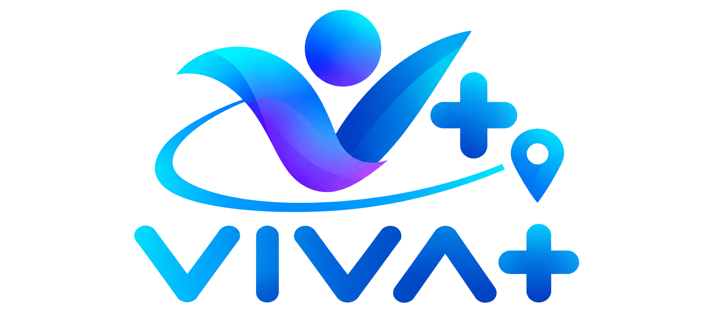

<header class="cabecalho">
    

    <button class="botao-menu"
            type="button"
            aria-label="Abrir menu"
            aria-expanded="false"
            aria-controls="menu-navegacao">
        ☰
    </button>

    <nav id="menu-navegacao">
        <a href="index.html">Início</a>
        <a href="mapa.html">Mapa</a>
        <a href="alimentacao.html">Alimentação</a>
        <a href="sobre.html">Sobre</a>
    </nav>
    
</header>
